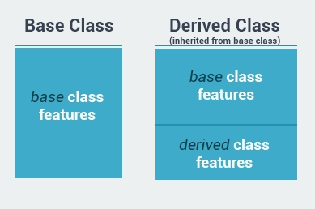

Destructors
-->A s constructors are used when a class is instantiated, destructors are automatically invoked when an object is destroyed or deleted
-->Destructors have the following attributes:
1-A class can only have one destructor
2-Destructors cannot be called. They are invoked automatically
3-A destructor doesn't take modifiers or have parameters
4-The name of a destructor is exactly the same as the class prefixed with a tilde (~)
ex:
class Dog{
~Dog(){
}
}
-->Destructors can be very useful for releasing resources before coming out of the program. This can include closing files, releasing memory and so on.
ex:
class Dog{
public Dog(){
Console.WriteLine("Constructor");
}
~Dog(){
Console.WriteLine("Destructor");
}
}
static void Main(string[] args){
Dog d = new Dog();
}
-->When the program runs, it first creates the object, which calls the constructor. The object is deleted at the end of the program and the destructor is invoked when the program's execution is complete.
----------------------------------------------------------
static
-->class members(variables,properties,methods) can be declared as static. This makes those members belong to the class itself, instead of belonging to individual objects. No matter how many objects of the class are created, there is only one copy of the static member
-->Because of their global nature, static members can be accessed directly using the class name without an object
ex:
class Cat{
public static int count=0;
public Cat(){
count++;
}
}
static void Main(string[] args){
Cat c1 = new Cat();
Cat c2 = new Cat();
Console.WriteLine(Cat.count);
}
-->The count variable is shared between all Cat objects. each time an object is created, the static value is incremented, the program above demonstrates this when 2 is displayed after creating two objects of that class
-->You must access static members using the class name. if you try to access them via an object of that class, you will generate an error.
-->The same concept applies to static methods
ex:
class Dog{
public static void Bark(){
Console.WriteLine("Woof");
}
}
static void Main(string[] args){
Dog.Bark();
}
-->Static methods can access only static members
-->The Main method is static, as it is the starting point of any program. Therefore any method called directly from Main had to be static
-->Constant members are static by definition
ex:
class MathClass{
public const int ONE =1;
}
static void Main(string[] args){
Console.Write(MathClass.ONE);
}
-->The static constructor is automatically called once when we access a static member of the class
ex:
class SomeClass{
public static int X {get; set;}
public static int Y {get; set;}
static SomeClass(){
X = 10;
Y = 20;
}
}
-->The constructor will get called once when we try to access SomeClass.X or SomeClass.Y
----------------------------------------------------------
Static Classes
-->An entire class can be declared as static
-->A static class can contain only static members
-->You cannot instantiate an object of a static class, as only one instance of the static class can exist in a program
ex:
Console.WriteLine(Math.Pow(2,3));
-->You access all members of the Math class using the class name, without declaring an object.
-->The Console class is also an example of a static class. we use its static WriteLine() method to output to the screen, or the static ReadLine() method to get user input.
-----------------------------------------------------------
this keyword
-->The this keyword is used inside the class and refers to the current instance of the class, meaning it refers to the current object
-->One of the common uses of this is to distinguish class members from other data, such as local or formal parameters of a method, as shown in ex:
class Person{
private string name;
public Person(string name){
this.name = name;
}
}
-->Here, this.name represents the member of the class, whereas name represents the parameter of the constructor
-->Another common use of this is for passing the current instance to a method as parameter: ShowPersonInfo(this);
-----------------------------------------------------------
The readonly Modifier
-->The readonly modifier prevents a member of a class from being modified after construction. it means that the field declared as readonly can be modified only when you declare it or from within a constructor
ex:
class Person{
private readonly string name = "John";
public Person(string name){
this.name = name;
}
}
-->if we try to modify the name field anywhere else, we will get an error, There are three major differences between readonly and const fields:
1-a constant field must be initialized when it is declared, whereas as readonly field can be declared without initialization, ex:
readonly string name; //Ok
const double PI; //Error
2- readonly field value can be changed in a constructor, but a constant value cannot
3-the readonly field can be assigned a value that is a result of a calculation, but constants cannot ex:
readonly double a = Math.Sin(60); //Ok
const double b = Math.Sin(60); //Error!
-->The readonly modifier prevents a member of a class from being modified after construction
-----------------------------------------------------------
Indexers
-->An indexer allows objects to be indexed like an array
ex:
string str = "Hello World";
char x = str[4];
Console.WriteLine(x);
1-Declaration of an indexer is to some extent similar to a property. The difference is that indexer accessor require an index, like a property you can use get and set accessors for defining an indexer
2-However, where properties return or set a specific data member, indexers return or set a particular value from the object instance.
3-Indexers are defined with the this keyword
ex:
class Clients{
private string[] names = new string[10];
public string this[int index]{
get {
return names[index];
}
set {
names[index] = value;
}
}
}
static void Main(string[] args){
Clients c = new Clients();
c[0] = "Dave";
c[1] = "Bob";
Console.WriteLine(c[1]);
}
-->Now, when we declare an object of class Clients, we use an index to refer to specific objects like the elements of an array
-->You typically use an indexer if the class represents a list, collection, or array of objects
-----------------------------------------------------------
Operator Overloading
Most operators in C# can be overloaded, meaning they can be redefined for custom actions
-->Overloaded operators are methods with special names, where the keyword operator is followed by the symbol for the operator being defined.
-->similar to any other method, an overloaded operator has a return type and a parameter list
-->the overloaded operator must be static
ex:
class Box {
public int Height {get; set;}
public int Width {get; set;}
public Box(int h, int w){
Height = h;
Width = w;
}
public static Box operator+(Box a, Box b){
int h = a.Height + b.Height;
int w = a.Width + b.Width;
Box res = new Box(h,w);
return res;
}
}
static void Main(string[] args){
Box b1 = new Box(14,3);
Box b2 = new Box(5,7);
Box b3 = b1 +b2;
}
ex:
public static bool operator > (Box a, Box b){
if(a.Height*a.Width > b.Height*b.Width)
return true;
else
return false;
}
-->No, it's not 'Box'. Don't be confused by an previous example. It was Box there, because the operator returned a Box object. Here it returns a boolean value, so it's 'bool'.
-----------------------------------------------------------
old examples
What is the output of this code?
class Temp {
public int num = 2;
public Temp() {
num++;
}
~Temp() {
num++;
}
}
static void Main(string[] args) {
Temp t = new Temp();
Console.WriteLine(t.num);
}
-->"NO IT SHOULD BE 4!! IT MUST BE 4!!!! BECAUSE OF THE DESTRUCTOR!!!!!" Stop right there!!! Remember, the destructor gets executed ONLY after the method in which its object is declared ENDS, in this case, it's the Main method.
-----------------------------------------------------------
Inheritance
Inheritance allows us to define a class based on another calss. This makes creating and maintaining an application easy.
-->The class whose properties are inherited by another class is called the Base class. The class which inherits the properties is called the Derived class. For example, base class Animal can be used to derive Cat and Dog classes. The dervied class inherits all the features from the base class, and can have its own additional features

ex:
class Animal {
public int Legs {get; set;}
public int Age {get; set;}
}
class Dog: Animal {
public Dog(){
Legs = 4;
}
public void Bark(){
Console.Write("Woof");
}
}
static void Main(string[] args){
Dog d = new Dog();
Console.WriteLine(d.Legs); // Outputs 4
d.Bark();
}
-->A base class can have multiple derived classes.
-->C# doesn't support multiple inheritance, so you cannot inherit from multiple classes, However you can use interfaces to implement multiple inheritance.
-----------------------------------------------------------
protected
-->Public members may be accessed from anywhere outside of the class, while access to private members is limited to their class
-->The protected access modifier is very similar to private with one difference, it can be accessed in the derived classes. So, a protected member is accessible only from derived classes
ex:
class Person {
protected int Age {get; set;}
protected string Name {get; set;}
}
class Student: Person {
public Student(string nm){
Name = nm;
}
public void Speak(){
Console.Write("Name: "+Name);
}
}
static void Main(string[] args){
Student s = new Student("David");
s.Speak();
s.Name = "Bob"//Error
}
-----------------------------------------------------------
sealed
-->A class can prevent other classes from inheriting it, or any of its members, by using the sealed modifier.
ex:
sealed class Animal {
//some code
}
class Dog : Animal { } //Error
What is the maximum number of base classes a sealed class can have? like any othe class just one base class
-----------------------------------------------------------
Derived Class Constructor & Destructor
-->Constructors are called when objects of a class are created. With inheritance the base class constructor and destructor are not inherited, so you should define constructors for the derived classes
-->However, the base class constructor the destructor are being invoked automatically when an object of the derived class is created or deleted
ex:
class Animal {
public Animal(){
Console.WriteLine("Animal created");
}
~Animal(){
Console.WriteLine("Animal deleted");
}
}
class Dog: Animal{
public Dog(){
Console.WriteLine("Dog created");
}
~Dog(){
Console.WriteLine("Dog deleted");
}
}
static void Main(string[] args){
Dog d = new Dog();
}
Output:
Animal created
Dog created
Dog deleted
Animal deleted
-->Note that the base class constructor is called first and the derived class constructor is called next, when the object is destroyed, the derived class destructor is invoked and then the base class destructor is invoked
-->You can think of it as the following: The derived class needs its base class in order to work, which is why the base class constructor is called first
-----------------------------------------------------------
Polymorphism
-->The word polymorphism means "having many forms"
-->Typically, polymorphism occurs when there is a hierarchy of classes and they are related through inheritance from a common base class
-->Simply, polymorphism means that a single method can have a number of different implementations.
Polymorphism
-->Consider having a program that allows users to draw different shapes. each shape is drawn differently, you don't know which shape the user will choose
ex:
class Shape{
public virtual void Draw(){
Console.Write("Base Draw");
}
}
-->The virtual keyword allows methods to be overridden in derived classes
-->Virtual methods enable you to work with groups of related objects in a uniform way
ex:
class Shape{
public virtual void Draw(){
Console.Write("Base Draw");
}
}
class Circle : Shape {
public override void Draw(){
// draw a circle...
Console.WriteLine("Circle Draw");
}
}
class Rectangle : Shape {
public override void Draw(){
// draw a rectangle
Console.WriteLine("Rect Draw");
}
}
static void Main(string[] args){
Shape c = new Circle();
c.Draw();
Shape r = new Rectangle();
r.Draw();
}
-->Polymorphism can be useful in many cases. For example, we could create a game where we would have different Player types with each Player having a separate behavior for the Attack method.
-----------------------------------------------------------
Abstract Classes
-->In some situations there is no meaningful need for virtual method to have a separate defnition in the base class like(polymorphism)
ex:
abstract class Shape {
public abstract void Draw();
}
1-abstract method declarations are only permitted in abstract Classes
2-Members marked as abstract, or included in an abstract class, must be implemented by classes that derive from abstract class
3-An abstract class can have multiple abstract members
Abstract Classes
-->An abstract class is intended to be a base class of other classes. it acts like a template for its derived classes
ex:
abstract class Shape {
public abstract void Draw();
}
class Circle : Shape {
public override void Draw(){
Console.WriteLine("Circle Draw");
}
}
class Rectangle : Shape {
public override void Draw(){
Console.WriteLine("Rect Draw");
}
}
static void Main(string[] args){
Shape c = new Circle();
c.Draw();
}
1-An abstract class cannot be instantiated
2-An abstract class may contain abstract methods and accessors
3-A non-abstract class derived from an abstract class must include actual implementation of all inherited abstract methods and accessors
-->it's not possible to modify an abstract class with the sealed modifier because the two modifiers have opposite meanings. The sealed modifier prevents a class from being inherited and the abstract modifier requires a class to be inherited
-----------------------------------------------------------
Interfaces
-->An interface is a completely abstract class, which contains only abstract members
ex:
public interface Ishape{
void Draw();
}
1-All members of the interface are by default abstract, so no need to use the abstract keyword
2-Interfaces can have public(by default) private and protected members.
3-It's common to use the capital letter I as the starting letter for an interface name
4-Interfaces can contain properties, methods, etc. but cannot contain fields(variables)
Interfaces
1-The term implementing an interface is used(opposed to the term "inheriting from") to describe the process of creating a class based on an interface.
ex:
public interface IShape {
void Draw();
}
class Circle : IShape {
public void Draw(){
Console.WriteLine("Circle Draw");
}
}
static void Main(string[] args){
IShape c = new Circle();
c.Draw();
}
Note-->The override keyword is not needed when you implement an interface
Why use interfaces rather than abstract classes??
-->A class can inherit from just one base class, but it can implement multiple interfaces, therefore by using interfaces you can include behavior from multiple sources in a class, to implement multiple interfaces, use a comma separated list of interfaces when creating the class: class A: IShape, IAnimal
Default Implementation
-->in interfaces allows to write an implementation of any method. this is useful when there is a need to provide a single implementation for common functionality
ex:
public interface IShape {
void Draw();
void Finish(){
Console.WriteLine("Done!")
}
}
class Circle : IShape {
public void Draw(){
Console.WriteLine("Circle Draw");
}
}
static void Main(string[] args){
IShape c = new Circle();
c.Draw();
c.Finish();
}
-----------------------------------------------------------
Nested Classes
ex:
class Car {
string name;
public Car(string nm){
name = nm;
Motor m = new Motor();
}
public class Motor {
//some code
}
}
-->A nested class acts as a member of the class, so it can have the same access modifiers as other members (public, private, protected).
-->Just as in real life, objects can contain other objects. For example, a car, which has its own attributes (color, brand, etc.) contains a motor, which as a separate object, has its own attributes (volume, horsepower, etc.). Here, the Car class can have a nested Motor class as one of its members.
-----------------------------------------------------------
Namespaces
-->Namespaces declare a scope that contains a set of related objects. you can use a namespace to organize code elements. you can define your own namespaces and use them in your program
ex:
using System;
System.Console.WriteLine("Hi");
-->The .NET Framework uses namespaces to organize its many classes. System is one example of a .NET Framework namespace.
-----------------------------------------------------------